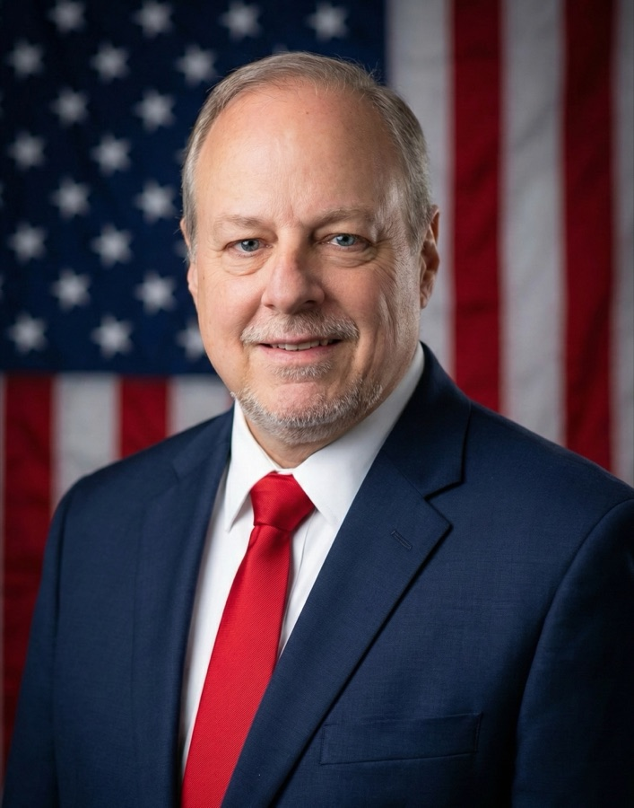

I've spent most of my career putting child molesters, rapists, and murderers in prison, and I asked for the job.
Before the voters of this circuit elected me District Attorney in 2020, I was the Chief Assistant here, and before that I was a child abuse prosecutor. When you've sat with a child who has to describe the worst thing that ever happened to them in a room full of strangers, you don't forget which side of the courtroom you belong on. I never have.
Swainsboro has been home for more than twenty-five years. My wife Jennifer teaches school. I have four sons, two grown and making their own way, and two boys we're raising here now. We're members of our church here in Swainsboro, where I've served as a deacon. My faith isn't a line on a website. It's the reason I believe the strong owe something to the weak, and it's what gets me up in the morning to do this work.
My family is from Sylvania. I went to school at Darlington, a boarding school in Rome, Georgia, where a debate coach told me something that stuck: an athlete can only run so fast, but there's no limit on how often or how well you can persuade people. I took an accounting degree at Georgia Southern because it was practical, earned my law degree at the University of Dayton, and worked briefly as an accountant. I hated every day of it. So I went to a courtroom, and I never left.
I started prosecuting in 2000 as this circuit's first full-time juvenile court prosecutor, and became the first prosecutor here to handle all crimes against children. From 2005 to 2008 I served as District Court Administrator for the Eighth Judicial Administrative District, the administrative arm of the superior courts across twenty-seven counties. In 2009 I came back to the courtroom as Chief Assistant District Attorney, where I carried child victim prosecution, felony cases in Candler and Emanuel counties, the office's budget, and the building of our victim advocate program.
In March 2026, the Attorney General of the United States personally recognized this office's work on a multi-agency child sex-trafficking investigation that began in Emanuel County and put four defendants in federal prison for crimes against five child victims. The Georgia Senate has commended the office's work alongside the Emanuel County Sheriff's Office.